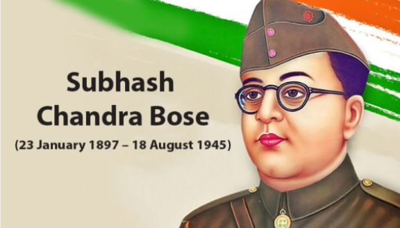

NETAJI SUBHASH CHANDRA BOSE
Subhash Chandra Bose
was one of the greatest leaders of India.

Subhash Chandra Bose was an outstanding activist, freedom fighter, and Parsi.
Subhash Chandra Bose is also referred to as
"Neta ji,"
He was born on
January 23, 1897, in the city of Cuttack, Odisha.
His mother's name was
Prabhavati Dutt,
and his father's name was
Janakinath Bose.
He was an outstanding student who placed second on the matriculation exam.
In 1942, he established the
"Azad Hind Fauz"
(Indian National Army) to combat British rule.
Give me blood, and I'll give you freedom, is his most famous quote.
Subhash Chandra Bose founded the swaraj newspaper and wrote the well-known book
"The Great Indian Struggle."
Netaji died on
August 18, 1945,
in a plane crash.
He is a beloved national hero who many children have always viewed as an idol.
In 1909 the 12-year-old Subhas Bose followed his five brothers to the Ravenshaw Collegiate School in Cuttack.
February 1916 Bose was alleged to have masterminded,[53] or participated in, an incident involving E. F. Oaten, Professor of History at Presidency.